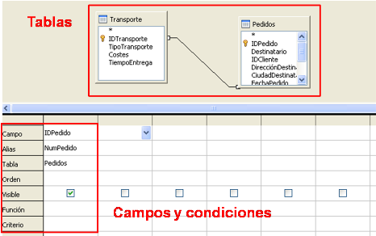
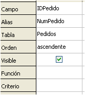
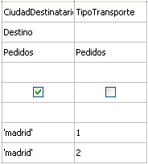
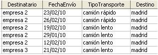

4.1.2. Vista Diseño
|
 |
| Vista de diseño de consulta |
La creación de consultas en vista Diseño, al igual que la creación de tablas, requiere un estudio pormenorizado de los condicionantes de la consulta.
El entorno de trabajo se divide en dos zonas:
- Zona superior.- se muestran las tablas seleccionadas.
- Zona inferior.- se muestran los campos incluidos en la consulta y condiciones que deben cumplir.
En la imagen se observa como se representan también las relaciones establecidas entre las tablas. Estas relaciones permitirán relacionar los campos en la consulta.
Si se incluye en la consulta un campo de otra tabla y no existe ninguna relación, al ejecutar la consulta se repetirán los campos de la primera tabla para cada valor del campo de la segunda. (Este es el Producto Cartesiano, es decir, multiplicar el número de registros por el número de campos de la segunda tabla
Importante
Comprueba lo aprendido
Relaciona cada icono con la acción que activa.
|  |
|
Campos y condiciones
|
- Elección del alias. Es opcional y se puede ocultar.
- Indicación de la tabla a la que pertenece el campo. Se puede ocultar, aunque es importante si hay campos con el mismo nombre en tablas distintas.
- Orden de visualización ascendente o descendente.
- Visibilidad del campo. Se suele desactivar cuando se va a utilizar para el filtrado de registros.
- Aplicar una función al campo seleccionado.
- Establecer criterios de filtrado. Se usan los signos convencionales (<, >, =) y se pueden combinar varias condiciones.
Caso práctico
Crea una consulta en vista diseño para visualizar los pedidos que se han enviado mediante el tipo de transporte camión lento, ordenados por clientes. Para ello agrega las tablas Pedidos y Transporte.
Nosotros ya lo hemos hecho y hemos obtenido los siguientes datos. ¿Eres capaz de llegar al mismo resultado?
Operadores Y - O
- Dos condiciones tecleadas en la misma columna se leen con el operador "o". La consulta muestra los valores que cumplen una condición o la otra.
- Si queremos seleccionar además otra condición habría que escribirla en el campo correspondiente en al misma fila. Las condiciones tecleadas en la misma fila se leen con el operador "y". La consulta muestra los valores que cumplen una condición y la otra.
Funciones
Las consultas con funciones se usan para calcular operaciones aritméticas con los datos de determinados campos.
Caso práctico
Crea la consulta Contar_pedidos para obtener el número de pedidos realizados por cliente.
Para saber más
Para ampliar, cambia el diseño de la consulta Pedidos_transporte para que seleccione los pedidos con destino Madrid y tipo de transporte 1 ó 2.
|  |  |
| Diseño consulta | Datos consulta |
| Imágenes de elaboración propia |
|